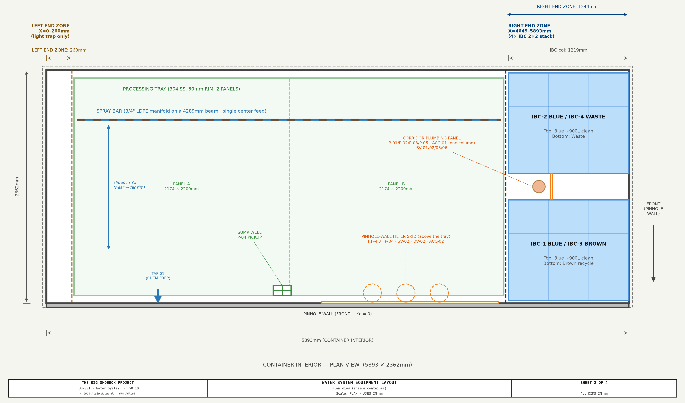
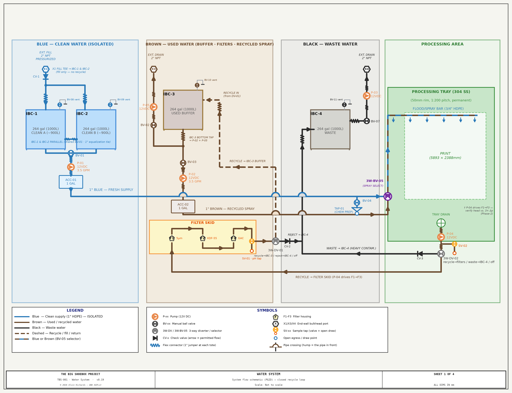

Water Processing Report¶
1. Purpose¶
The camera operates in remote locations with no municipal water or drainage. This report specifies a self-contained three-circuit water system that:
- Stores clean water for ~10 full-size prints per resupply run on fresh Blue alone, or ~15 prints with Brown wash-1 recycling (§3)
- Recycles used wash water through a three-stage filter train, extending usable supply by ~50%
- Holds all waste water in a closed IBC, pumped out through an end-wall port for off-site disposal
- Runs entirely on 12V DC from the solar/battery system

Three circuits:
| Circuit | Purpose | Storage |
|---|---|---|
| Blue — clean | Fresh water for processing | IBC-1 + IBC-2, top tier — 1,800L working fill (900L each) |
| Brown — used | Collected wash water, filtered into a buffer and reused for wash 1 | IBC-3, bottom tier |
| Black — waste | Rejected or heavily contaminated water, held for off-site disposal | IBC-4, bottom tier |
All four totes are identical 1,000L caged IBCs; the fills above are working levels, not tote sizes.

2. Cyanotype Chemistry, Wash Water and Waste¶
2.1 Sensitizer — baseline and the dichromate option¶
The sensitizer is Ware's New Cyanotype: ammonium iron(III) oxalate and potassium ferricyanide at 3:1 by mass. This iron-only chemistry is the baseline.
Ware adds ammonium dichromate (0.1 g per 100 ml, raised for more contrast) to steepen the print's contrast. Whether to use it is a creative choice, made by the artist for each print or session, not a design parameter. The water system is designed to handle both chemistries. The choice changes three things: what the wash water carries (§2.2), how DV-02 routes the first wash (§4.2), and how the collected water is disposed of (§4.3). The mixing, valve settings and disposal steps for each choice are in the Operating Manual (§0.3, §4.2, §5.1).
2.2 What is in the wash water¶
When a cyanotype print is washed, the water picks up:
| Compound | Source | Notes |
|---|---|---|
| Ammonium iron(III) oxalate | Unexposed sensitizer | Water-soluble, pale yellow-green; low toxicity |
| Potassium ferricyanide | Unexposed sensitizer | Water-soluble, yellow-orange; an iron-cyanide complex, low acute toxicity |
| Prussian blue particles | Image pigment wash-off | Fine blue solid particles, ~1–10 micron |
| Iron(III) compounds | Oxidation products | Color the water blue-gray |
| Ammonium dichromate | Dichromate option only (0.1–0.4% of the sensitizer) | Water-soluble, orange; chromium(VI), a Category 1A carcinogen |
pH: Wash water starts slightly acidic to neutral (pH 6–7) and may drift alkaline as iron compounds accumulate. Alkaline conditions (pH >8) accelerate the slow breakdown of ferricyanide to ferrocyanide and trace cyanide ions, so the system holds the stored water below pH 7.5 (sample taps and a dosing port, §4.2).
The wash-1 bath carries most of the dissolved sensitizer: it is the leaching wash, where the unexposed chemistry comes out of the muslin. Washes 2 and 3 rinse a print that has already been cleared.
Source: Photrio — Cyanotype wash water composition · Ask MetaFilter — Disposing of cyanotyping water
2.3 Waste classification¶
The classification of the collected water, and its regulatory basis, is in the Wash-Water Classification report. Its results set the design:
- Baseline (iron-only): non-hazardous, confirmed once by a bench test and a tote sample (Sensitizer Trials T6).
- Dichromate option: the chromium puts the collected water at 2.2–8.7× the 5 mg/L federal limit, so IBC-4 is hazardous waste (D007). IBC-3 (Brown) is hazardous until measured (T7).
Separating wash 1. Because wash 1 carries most of the chromium, DV-02 sends it straight to IBC-4 when the dichromate option is used (§4.2). Washes 2 and 3 go to Brown as usual. This keeps the most concentrated water out of the filter train and the recycle loop, and holds the hazardous fraction to ~46 L per print. Over a resupply run the collected total is unchanged, but the split shifts toward Waste: ~690L in IBC-4 and ~555L in IBC-3, both within the 1,000L totes. The disposal route for each chemistry is in §4.3.
2.4 What filtration can and cannot do¶
A sediment + heavy-metal + activated-carbon filter train will: - Remove the Prussian blue particle load (sediment stage) - Reduce dissolved iron, organics, and iron-complex color (KDF and carbon stages) - Restore water to usable intermediate-wash quality for 1–3 passes
It will not: - Restore water to fresh-water quality - Remove dissolved iron salts fully - Make the water safe for discharge to ground - Remove chromium: no stage is credited with it, which is why wash 1 bypasses the filters under the dichromate option
Reuse rule: Recycled Brown water is used only for the first wash, where the unexposed sensitizer leaches out and the bath is dirtiest regardless of what it starts as. Washes 2 and 3 use Blue, so the print finishes in clean water and iron compounds are not re-deposited. After 3 recycle passes, Brown water goes to Black.
Iron compounds in the wash water react with copper and galvanized steel — the plumbing is PVC throughout (Plumbing Report §4).
3. Water Volume Calculations¶
Per-print water requirement¶
One wash floods the processing tray to 6mm (¼") depth — 15 gal per wash.
| Wash cycle | Water source | Volume | Drains to |
|---|---|---|---|
| Wash 1 — 5 min | Brown (recycled) | 15 gal | Brown |
| Wash 2 — 5 min | Blue (clean) | 15 gal | Brown |
| Wash 3 — 5 min | Blue (clean) | 15 gal | Brown → Black after 3 recycles |
| Total per print | ~30 gal net Blue consumed |
Storage capacity vs. print count¶
| Scenario | Blue washes per print | Prints from 476 gal Blue |
|---|---|---|
| No recycling | 3 | ~10 prints |
| With recycling (wash 1 from Brown) | 2 | ~15 prints |
The first print after a resupply finds IBC-3 empty, so it runs wash 1 on Blue; that one extra Blue wash does not change the count.
Water balance — recovered vs. consumed. Of the 1,800L Blue supply, ~1,245L is recovered into the collection totes (Brown + Waste, ~622L each) and ~465L (~31L per print) is open-process loss: water carried out in the wet prints (each full-plane muslin sheet, ~9.19 m², leaves saturated), evaporation from the open spray-wash tray, and unrecovered residual (tray-surface film, the sump dead-volume below the P-04 pickup, hose and manifold hold-up). The loss is why two collection totes balance the supply — they are sized for the recovered fraction, not full throughput. The Weight Distribution Report §4.2 uses the same recovered figure for the exhausted-state transport mass.
Extending capacity¶
Maximizing the initial load. Filling both Blue totes toward their 1,000L limit buys ~1–2 more prints, capping a single hauled load at ~17 prints; the max-fill transport case is validated in Weight Distribution Report §4.4. The collection totes must rise in proportion to realize those prints.
On-site top-up — extended deployment. A deployment can run past the single-load ceiling through the end-wall bulkhead ports, with no cargo-door access: resupply Blue from a bowser or tanker through X1, and discharge Brown/Waste through X3 / X4 to a holding tank. The totes then act as buffers, not caps — print count is set by water logistics (bowser visits, disposal access). For transport the totes return to their validated fill states. The procedure is in the Operating Manual.
Cooling-water overhead (hot weather). The evaporative cooler draws from the same Blue circuit (TAP-01 on the pinhole wall). One deployment uses about one reservoir (~18L; Ventilation Report §5) — less than one print's Blue draw and ~1% of the supply. It does not change the print count for a short outing; a resupply spent entirely on hot, multi-print sessions yields one or two prints fewer. The print counts above cover processing water only.
4. System Architecture¶
4.1 Blue System — Clean Water Supply¶
IBC-1 ──┐
├──→ Manifold → BV-01 → P-01 → ACC-01 → BV-05 → BV-06 → Spray bar → Processing tray
IBC-2 ──┘
- The two Blue totes feed a 1" PVC manifold through their DN50 tote valves; BV-01 isolates the P-01 suction. A 1" equalization cross-tie at the base keeps their levels balanced as P-01 draws and X1 refills. Like every tote connection, the tie lands on each tote through a short 1" flex jumper, so the rigid PVC can't fatigue as the totes settle independently
- P-01: Shurflo 2088 12VDC diaphragm pump — 3.5 GPM, 45 PSI, self-priming
- ACC-01: 0.75L pressure accumulator — smooths pump cycling and holds pressure when the pump is off
- Check valves: CV-1 on the X1 fill — the one flow path with no on-board pump. The Shurflo 2088s carry an integral check valve (2088-554-144 datasheet), so the pumped supply legs do not need an additional check valve. The two waste legs are the exception (§4.3)
- Fill: one external bulkhead (X1) takes a pressurized supply hose and fills both Blue totes in parallel (§7)
- Vents: every tote has a valved side-entry vent high on its walkway face (BV-08 to BV-11), open while filling and operating, closed for transport (Plumbing Report §3.1)
4.2 Brown System — Used Water Recycling¶
Processing tray sump (P-04 suction pickup)
│
P-04 (tray drain transfer pump)
│
SV-02 SAMPLE TAP (meter incoming pH → set DV-02 routing)
│
3W-DV-02 ────────────────────────────→ IBC-4 waste (wash 1 under the dichromate option; heavy contamination)
│
F-1 (5-micron MPP sediment)
│
F-2 (KDF-55 heavy-metal)
│
F-3 (GAC carbon block)
│
SV-01 SAMPLE TAP (meter filtered pH)
│
3W-DV-01 ──→ pH 6–7.5, visually acceptable: IBC-3 (Brown buffer)
│
└──→ above pH 7.5 / discolored: IBC-4 (waste)
IBC-3 (Brown buffer)
│
P-02 ──→ ACC-02 (pulsation damper) ──→ BV-05 ──→ BV-06 ──→ spray bar (wash 1)
Filter train: three 4.5"×20" Big Blue housings in a bank high on the pinhole wall. Housings, plumbing, and cartridge replacement intervals are in Plumbing Report §2.1.
| Stage | Cartridge | Removes |
|---|---|---|
| F-1 | MPP 5-micron melt-blown polypropylene sediment | Gross sediment, fiber lint, Prussian blue particles |
| F-2 | KDF-55 heavy-metal removal | Dissolved iron compounds from ferricyanide wash water |
| F-3 | CTO coconut-shell activated carbon block | Residual organics, color |
DV-02 — separating the drain. DV-02 sits ahead of the filters, so any wash can go straight to IBC-4 without passing through the filter train or entering the recycle loop. It serves two cases: wash 1 under the dichromate option, which carries most of the chromium (§2.3), and drain water heavily loaded by a failed coat or a spill.
pH management: SV-02 samples the incoming used water ahead of DV-02, and SV-01 samples the filtered water before DV-01 returns it to IBC-3. The Brown buffer is held at pH 6–7.5 so the ferricyanide stays stable (§2.2). Slightly acidic water is acceptable. A citric-acid dosing port at the IBC-3 outlet corrects alkaline drift, and DV-01 sends out-of-range filtered water to IBC-4 instead of the buffer. The sampling and dosing procedure is in the Operating Manual §4.2.
4.3 Black System — Waste Containment¶
FROM 3W-DV-01 (filtered water out of pH range)
FROM 3W-DV-02 (wash 1 under the dichromate option; heavily contaminated drain water)
│
IBC-4 (waste)
│
P-03 → X4 (end-wall camlock)
│
Disposal route by chemistry (§2.3)
- The DV-01 and DV-02 waste legs join at a tee just before IBC-4. Each leg carries a check valve below the tee — CV-2 (DV-01) and CV-3 (DV-02) — so one leg cannot back-feed the other and the IBC-4 riser cannot drain back through DV-01 into the filter train
- IBC-4 stays in the stacking frame. It has a DN50 butterfly valve (S60×6 thread) and is pumped out by P-03 through X4 into the hauler's tanker, without opening the cargo doors. Brown (IBC-3) leaves the same way through X3 by P-05
- Disposal route follows the chemistry choice (§2.3):
| Chemistry | IBC-4 (Waste, via X4) | IBC-3 (Brown, via X3) |
|---|---|---|
| Baseline (iron-only) | Liquid-waste hauler or wastewater plant (non-hazardous, confirmed once) | Same |
| Dichromate option | Licensed hazardous-waste hauler, manifested (D007) | Hazardous until measured; non-hazardous route once Brown is measured below 5 mg/L |
- Neither tote is ever discharged to a storm drain, soil or waterway. The totes are closed vessels with the only outlets at the X3/X4 camlocks, so all collected water leaves through a hauler's hose
- The IBC-4 cap and valve stay closed between pump-outs, because evaporation concentrates the waste and UV exposure drives the ferricyanide breakdown (§2.2)
4.4 Processing Tray and Spray Bar¶
The tray and the spray-bar gantry are specified in the Processing Tray & Spray Bar Report. Their role in the water system:
- Tray — a permanent stainless steel tray on the optical-zone floor, sloped to a center pickup well. P-04 draws from the well through a hose that rises through the walkway grate, so neither the tray floor nor the container floor is penetrated.
- Spray bar — a rolling gantry fed from BV-06 (spray on/off, above the selector BV-05) by a flexible hose; its 43 down-jet nozzles deliver either Blue (P-01) or Brown (P-02).
- Liner — a fresh 6-mil black LDPE sheet covers the tray each session, keeping prints off the stainless and simplifying cleanup.
5. Plumbing Specification¶
Pipe sizing, fittings, joints, and the PVC Sch-40 material choice are specified in the Plumbing Report §4. All pump-driven runs are 1/2", matching the Shurflo 2088 ports; larger pipe is used only for the gravity fill/drain lines at the bulkhead ports and the filter outlet.
6. Electrical — 12V DC Power¶
All five pumps are Shurflo 2088s drawing 5.2A at 12V on Circuit C (Electrical Report §7.3). Per-print pump energy is budgeted in the Daily Energy Report.
Continuous flow-through wash. The supply pump (P-01 Blue or P-02 Brown) and the tray-drain pump P-04 run concurrently at the same 3.5 GPM, so the drain keeps pace with the spray bar and the tray holds a shallow, stable flowing film rather than a standing bath. The two pumps are on separate fuses (Circuit C1/C2) under one 2-pole master switch. Water per print is set by the flood volume (§3).
7. Equipment Layout¶
Sheet 2 (§1) is the water-system plan view. The four totes stand in a 2×2 stack in the shadow-free right end zone (Equipment Layout Report; frame and stacking in the IBC Stacking Report):
| Column | Top | Bottom |
|---|---|---|
| Near | IBC-1 Blue | IBC-3 Brown |
| Far | IBC-2 Blue | IBC-4 Waste |
The 270mm plumbing corridor between the columns carries all supply and return lines.
Equipment placement. The corridor pumps (P-01, P-02, P-03, P-05) and ACC-01 mount on the Corridor Plumbing Panel at the IBC front, so pump-to-tote lines are short and stay inside the corridor. P-04, the filter bank, and the sample taps sit on the Pinhole Wall filter skid. The longest run is the Blue supply from P-01 along the pinhole wall to BV-05 and the spray bar. The lines between the corridor and the skid run as a flat ribbon under the right-walkway grate. Routing detail is in the Plumbing Report §7 and Walkway Pipe Routing.
External ports. Three 2" NPT bulkheads with camlocks, stacked on the end-wall centerline, let the system be filled and drained from a bowser or tanker without opening the cargo doors:
| Port | Function | Connects to |
|---|---|---|
| X1 — Fill Blue | Fresh-water fill (pressurized supply) | Both Blue totes, side-entry near the top |
| X3 — Drain Brown | Used-water drain (P-05) | IBC-3 |
| X4 — Drain Waste | Waste drain (P-03) | IBC-4 |
X3 and X4 sit above the bottom-tier totes, so Brown and Waste cannot drain out by gravity — they leave only when P-05 / P-03 pump them. CV-1 stops backflow out of X1. Each port takes a tethered camlock dust cap whenever no hose is connected.
The fill side-enters each Blue tote because the stacked totes leave only 52mm of ceiling headroom — no top-cap access.
8. Parts List and Cost¶
Parts, suppliers, and current prices: the Master Shopping List, filtered to the water system. The water-system budget, including the processing tray, spray bar, and IBC stacking frame, is in the Project Cost Breakdown §6.
9. Maintenance¶
The storage side needs little upkeep by design: the totes are closed, opaque vessels and the plumbing is PVC throughout. Three tasks recur: flushing sediment from the Brown buffer, rinsing the Blue totes against biofilm before long storage, and checking the IBC-4 valve and cap before transport. Filter cartridges, pipe joints, pumps and the accumulator are covered in the Plumbing Report §9. The intervals and procedures are in the Operating Manual — Maintenance.
10. Hazards Designed For¶
-
Ferricyanide breakdown. Alkaline conditions plus UV can release trace cyanide ions from ferricyanide. The design holds every container below pH 7.5 and keeps the totes closed and opaque. The risk is theoretical rather than acute at wash-water concentrations.
-
Prussian blue particles. Prussian blue is non-toxic, but the fine particles irritate skin and eyes. The F-1 sediment stage takes them out of the recycle loop.
-
Citric-acid dosing. Dry acid added to iron-rich water can react exothermically and bubble, so the dosing port takes pre-dissolved solution, not dry acid.
-
Chromium (dichromate option only). IBC-4, and IBC-3 until measured, hold chromium(VI)-bearing water (§2.3). The only outlets are the X3/X4 camlocks, so the water is never handled open.
Personal protection and handling steps for each hazard are in the Operating Manual.
11. Source References¶
- Photrio — Composition of cyanotype wash water
- Ask MetaFilter — Disposing of cyanotyping water
- Wash-Water Classification — regulatory basis for the waste classification
- Mike Ware — The New Cyanotype Process — sensitizer recipe and dichromate dose
- Shurflo 2088-554-144 pump datasheet — flow, pressure, integral check valve
Suppliers and part links are in the Master Shopping List.